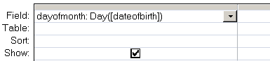

Return the day of the month (0-31).
Syntax
Day ( date_value )
The Day function can be used in VBA or in an SQL query.
Examples
In a query:

In VBA:
Dim intMonthDay As Integer
intMonthDay = Day(#12/31/2012#)
“If you are planning for a year, sow rice; if you are planning for a decade, plant trees; if you are planning for a lifetime, educate people” ~ Chinese Proverb
Related:
Date - The current date.
Now - The current system date and time.